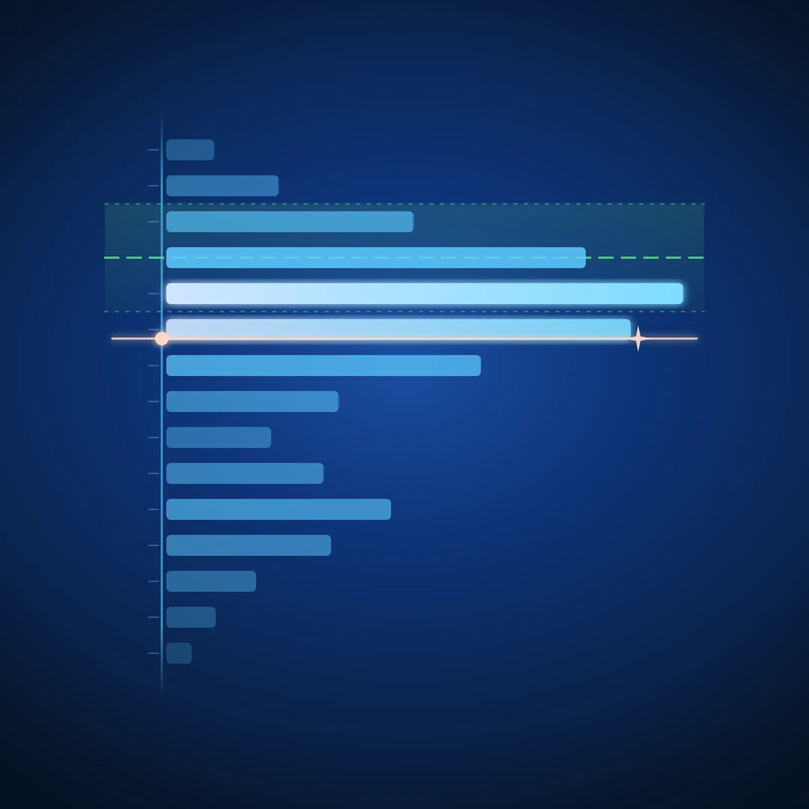

How to Read a Loudness Histogram

Take two masters that both read −14 LUFS integrated. One feels steady and confident next to anything on a playlist. The other feels loud in the chorus, thin in the verse, and somehow quieter overall. Same number, different records.
The number isn't lying. It's just one number, and it is describing an entire song. A moving meter has the opposite problem: it tells you everything about right now and remembers nothing. Between the needle and the single integrated figure, there is a piece of information neither one shows — how long your track spent at each level.
That is what a loudness histogram measures. This article covers what the histogram actually accumulates, how to read the common shapes, what the median tells you that integrated loudness can't, and how to use the whole picture against a delivery target.
What a loudness histogram actually measures
A loudness meter produces a reading many times per second. Momentary LUFS, the fastest of the standard BS.1770 readings, is a sliding 400 ms window — over a three-and-a-half-minute track, that is thousands of measurements. Normally you watch them go by and they are gone.
A histogram keeps them. Every reading is sorted into a level bin — −8 to −9 LUFS, −9 to −10, and so on — and each bin grows as the track spends time there. When the song ends, you are looking at a time-at-level distribution: a shape whose axis is level and whose mass is dwell time.
Not how loud — how long. The loudest moment of your track might be a single snare hit. The histogram shows you where the track lived.
The four shapes you'll actually see
Real material produces a small vocabulary of shapes. Learning to read them takes about one afternoon.
| Shape | What it usually means |
|---|---|
| One narrow spike | The track lives at a single level — hard limiting, or tightly controlled dialogue |
| One wide mound | Level moves freely — dynamic material breathing around a centre |
| Two lobes | Two distinct states — verse and chorus, speech over a music bed, intro versus body |
| A body with a long quiet tail | A consistent core plus fades, breakdowns, or ambience |
The narrow spike
All the mass in two or three bins. The track sits at one level and never leaves it. For a podcast or an audiobook, this is the goal — it means the listener never reaches for the volume knob. For music, it is a choice: modern hyperpop and some EDM genuinely live here, but if you didn't choose it, it usually means the limiter made the choice for you.
The wide mound
Mass spread across 8–12 dB with a soft peak. This is what unforced, dynamic material looks like — jazz, orchestral, a rock mix that still has its transients. Nothing to fix. The only question is whether the centre of the mound sits where you want it relative to your target.
The two lobes
The most informative shape in the set. Two separate concentrations of mass means your track has two homes — almost always the verse and the chorus. The distance between the lobes, read straight off the axis, is your section contrast in dB. Four to six dB of separation reads as a satisfying lift. Ten or more and streaming listeners will ride the volume; two or less and the chorus may not land as an event at all.
The long tail
A healthy body with a thin smear stretching toward silence. That tail is your intro, your breakdown, your outro fade. It is usually harmless — but it is also the part of the shape that quietly drags the integrated number away from where the song actually lives, which brings us to the median.
Median vs integrated: two different questions
Integrated LUFS is an energy average — every gated block of the track pooled into one figure, per ITU-R BS.1770. Because it averages energy rather than decibels, loud sections dominate it, and because the gate only removes near-silence, quiet music still counts against it.
The median of the histogram answers a different question: what level was the track at or above for half its runtime? It is a time average, not an energy average. No single section can dominate it, and a loud snare hit moves it not at all.
Concretely: a track whose body sits around −9 LUFS momentary, with a 45-second ambient intro down at −20, might read about −10.5 integrated. Neither number is where the record feels like it lives. The median lands in the body, because the body is where the time went. When median and integrated disagree, the histogram's tail or second lobe is the explanation — and now you can see it instead of guessing.
Integrated is the delivery number; platforms normalize on it, so you ship to it. The median is the honest description of the listening experience. You want to know both, and you want to know why they differ.
Reading the shape against a target
A histogram becomes a decision-making tool the moment your delivery target is drawn on the same axis. Then the question is not "did the needle touch −14" but where does the mass sit relative to the target band?
- Mass centred in the band: done. Normalization will barely touch you.
- Mass above the band: the platform will turn the whole track down by roughly the overshoot. You paid for that loudness in transients and got nothing back. The histogram shows you how much of the track was over — a sliver is fine, the whole lobe is a remaster.
- Mass below the band, tail within it: the track will be normalized up (where the platform does that) or simply play quiet. Check whether it's the whole track or just an over-long intro.
- One lobe in, one lobe out: your section contrast straddles the target. Usually fine — this is what dynamic records look like on a histogram. Ship it.
Note what the histogram is not doing here: it isn't judging the shape. There is no correct histogram — the shape belongs to the arrangement. The target band judges the delivery; taste judges the music.
LUFS or RMS: which units to accumulate
The same time-at-level idea works on any level reading, and the two worth having are momentary LUFS and plain RMS.
Momentary LUFS is K-weighted — filtered to approximate how hearing weights the spectrum, with the low end relaxed and the presence region emphasized. It is the right view for anything that ends at a streaming platform or a broadcast spec, because it is the currency those specs are written in.
RMS is unweighted energy. It is the right view when you are gain-staging into gear calibrated in RMS, matching a reference from the pre-LUFS era, or checking raw energy without the perceptual tilt — a bass-heavy master can read deceptively polite in LUFS while RMS tells you how much voltage is actually moving.
The practical detail that matters: a meter that accumulates both simultaneously lets you flip between views of the same pass. If switching units means starting the accumulation over, you will check one and skip the other every time.
Three workflows that use it
- The master check. Reset, play the whole track once, then read three things: the median against the target, the shape of the mass against the tolerance band, and the size of whatever sits above the band. Thirty seconds of reading replaces re-listening to the track four times while staring at a needle.
- The section-contrast check. Mixing something with a verse/chorus structure? Run the song and look for the two lobes. Measure the gap. If the contrast you feel in the room doesn't show up as separation on the axis, the chorus lift is spectral or arrangement-driven rather than level-driven — worth knowing before you push faders to force it.
- The dialogue check. For podcast and voice work, the whole job is a narrow spike at the spec — −16 LUFS integrated for most podcast platforms, −18 to −20 for some broadcast contexts. A wide or double-lobed speech histogram means uneven gain riding or two presenters at two levels; fix it with clip gain or gentle compression, then re-run until the spike tightens.
One habit makes all three work: reset the histogram at the start of every pass. A distribution accumulated across two different songs, or across a song plus five minutes of you soloing the kick, describes nothing.
The short version
- A loudness histogram is a time-at-level distribution: level on the axis, dwell time as mass.
- It shows where the track lived — the thing neither a moving needle nor a single integrated number can tell you.
- Four shapes cover most material: the spike, the mound, the two lobes, the tail. Each has a straightforward reading.
- Integrated LUFS is an energy average and the delivery number. The median is a time average and the honest one. The shape explains any gap between them.
- Read the mass against the target band drawn on the same axis — how much of the track is over matters more than whether the loudest moment was.
- Accumulate LUFS-M for delivery, RMS for energy. Reset every pass.
- There is no correct shape. The histogram reports; the target judges delivery; you judge the music.
Want to see where your track lands before you upload? The Mix Analyzer is a free browser-based tool that measures loudness, true peak, dynamics, stereo image, and tonal balance.
Want the histogram itself in your DAW? Arcoline draws a time-at-level histogram on the dial's own printed loudness axis — LUFS M and RMS accumulate together, with a live median readout and your delivery target on the same scale. Free, VST3 / AU / Standalone for Mac & Windows.